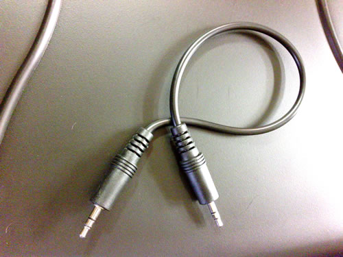
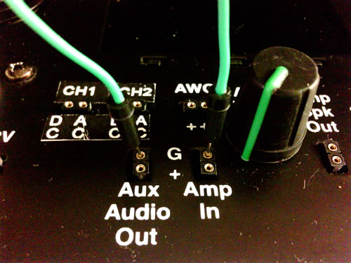
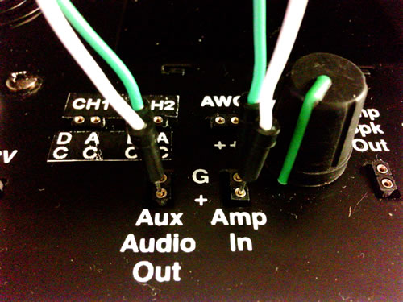
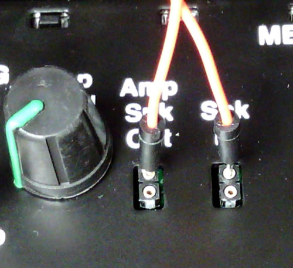
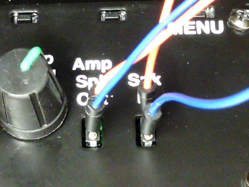

This lab will have you experimenting with capacitor and inductor filters and hearing the results. In addition to your lab kit you will need something to play some music, a phone or mp3 player would be best. There is a short cable to connect this included with your kit. Using a computer to play back the audio is possible but will require a longer cable. These are available at most electronics stores, contact your instructor if you have questions.
The jumper wire colors indicated in the instructions are suggestions only, you may not have the lengths needed in the colors suggested. Use whatever colors you have. Using the colors indicated in the directions will make the lab images and instructions more useful but will not always be possible.
The Setup
4-1. Let’s start by just getting audio through the speaker in your lab kit.
- Plug in the power cable for your lab kit and into a working outlet. Your lab kit should light up.
- Make sure that the “Amp Level” control is turned down all the way (fully counter-clockwise)
- Find the 1/8” to 1/8” cable included with your lab kit.
- Connect one end of the 1/8” to 1/8” cable to your audio player headphone output.
- Connect the other end to the “External Audio Input” of the lab kit.
 - Now get a Green jumper wire from the bag of jumper wires that came with your kit (the shortest you can find would be best).
- Connect one end to the “Aux Audio Out G” connection on your lab kit.
- Connect the other end to the “Amp In G” connection on your lab kit.
 - Next get a White jumper wire from the bag of jumper wires that came with your kit (the shortest you can find would be best).
- Connect one end to the “Aux Audio Out +” connection on your lab kit.
- Connect the other end to the “Amp In +” connection on your lab kit.
 - Next get an Orange jumper wire from the bag of jumper wires that came with your kit (the longest you can find would be best).
- Connect one end to the “Amp Spk Out” top connection on your lab kit.
- Connect the other end to the “Spk In” top connection on your lab kit.
 - Now get a Blue jumper wire from the bag of jumper wires that came with your kit (the longest you can find would be best).
- Connect one end to the “Amp Spk Out” bottom connection on your lab kit.
- Connect the other end to the “Spk In” bottom connection on your lab kit.
 - Play some music on your player and turn up the “Amp Level” control. You should hear music!
- Note that this is not a great sounding speaker, it is intended to be just good enough to allow you to hear what you need to for the labs.
- In order to do what is needed in all version of the labs, this amplifier has a lot of “gain”. This means that it may sound distorted. If it does, try turning down the volume on your MP3 player/phone.
- Now you know this is working without any filter, always a good start.
Check yourself and set yourself.
4-2. Now we will build our first filter circuit. To do that we need to connect to our Breadboard, the breadboard is a convenient way to connect components in a circuit. It is simply a number of holes that accept leads from components and make an electrical connection between them.
- This close-up image color codes the holes to indicate how they are connected. The holes with the same color are connected to each other. Any component leads placed in those holes will connect to each other.
- The numbered vertical columns are connected in groups of 5 (a-e and, separately, f-j).
- In addition there are long horizontal rows of 50 holes that are connected. These have red or blue lines running along them.
4-3. The Orange and blue wires that we used to connect “Amp Spk Out” to “Spk In” need to connect to our breadboard.
- Turn down the “Amp Level” control.
- Remove the Orange wire connection from the “Spk In” connection and place it on the breadboard in connection point “f-25” (row f, column 25).
- Remove the Blue wire connection from the “Spk In” connection and place it on the breadboard in the connection point below column 25 in the horizontal row with the red line running along it.
- Now we have to re-connect to the “Spk In” connections. Get a Yellow jumper wire and:
- Connect one end to the breadboard in connection point “g-25” (row g, column 25). (This will connect it to the Orange wire.)
- Connect the other end to the “Spk In” top connection.
- Get a Black jumper wire and:
- Connect one end to it on the breadboard in the connection point below column 3 in the horizontal row with the red line running along it (this will connect it to the Blue wire).
- Connect the other end to the “Spk In” bottom connection.
- Test that you are still hearing sound from your speaker. If not, check that you did everything in #6-3 correctly.